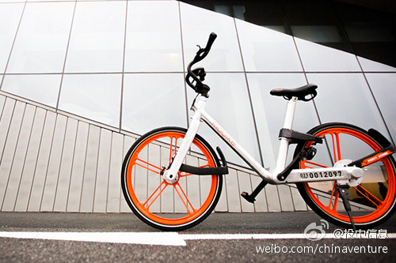

王晓峰思路很清晰，一开始就有全球化思维的中国企业不多。看好摩拜。@投中网:【专访摩拜单车CEO王晓峰：共享单车和打车软件有本质不同 决定结局的关键有两个】在亚布力，围绕共享单车的火热，围绕短期预期、长期规划，围绕国际化时机和条件，围绕自行车行业的革命，以及业态竞争和打车之争的同与不同，王晓峰都谈到了摩拜方面的经验和思考：专访摩拜单车CEO王晓峰：共享单车和打车软件有本质不同 决定结局的关键有两个 
 专访摩拜单车CEO王晓峰：共享单车和打车软件有本质不同 决定结局的关键有两个
专访摩拜单车CEO王晓峰：共享单车和打车软件有本质不同 决定结局的关键有两个